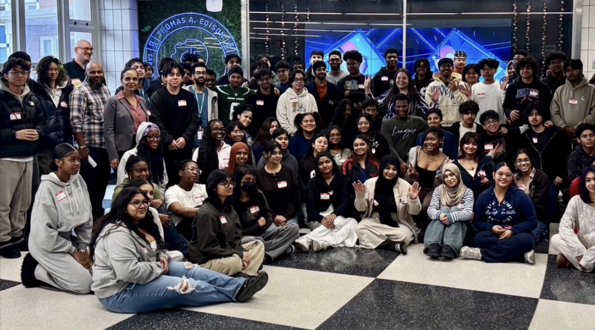
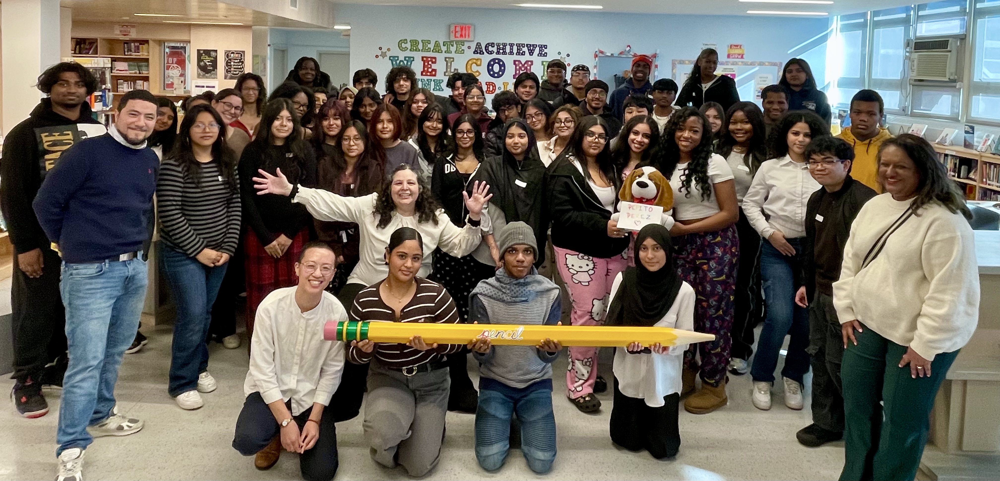
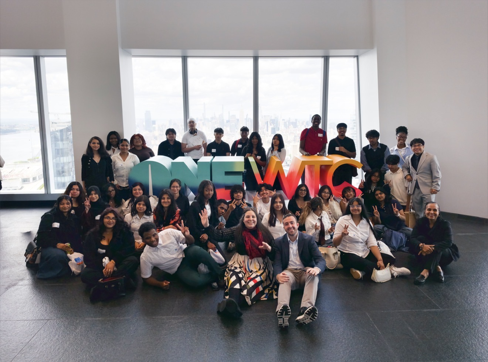

One of the many events I have attended is this hackathon which was hosted in my school. In this hackaton I was able to improve my teamworking skills as well as communicating skills. I was paired with two seniors and we were able to create a small and simple game on figma. Overall such a nice experience

During this event, I got a chance to meet varius people in tech aswell as a CEO. I was introduced to what we would be doing for the next couple months until June. I was Paired with three other of my classmates and our goal was to work together and create a game/app that brought awareness to social challenges around the world. Our team was Poverty fighters and our main focus was helping people in poverty. You can see more of POverty fighters in my projects area. Overall the event was really fun and engageing

Although our team Poverty Fighters weren't finalist we still made our way to The One World Trade Center in Manhattan to support our fellow classmates who did make it to the finals. This even was really fun and it gave me chance to network with others. Overall this even was amazing and fun.